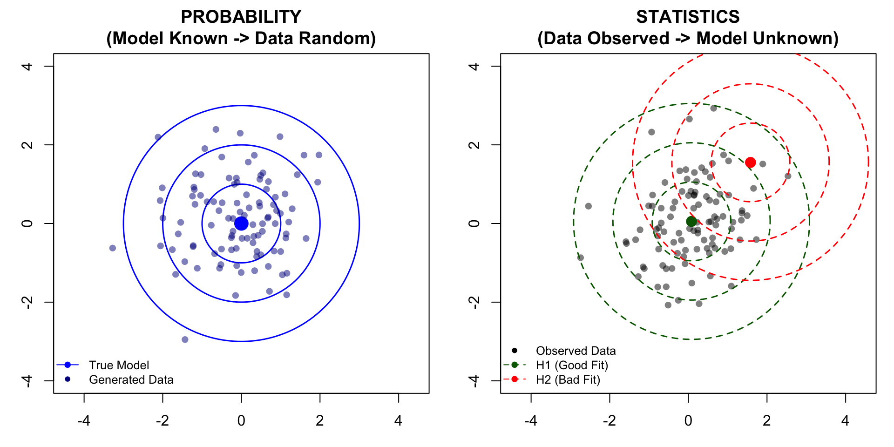
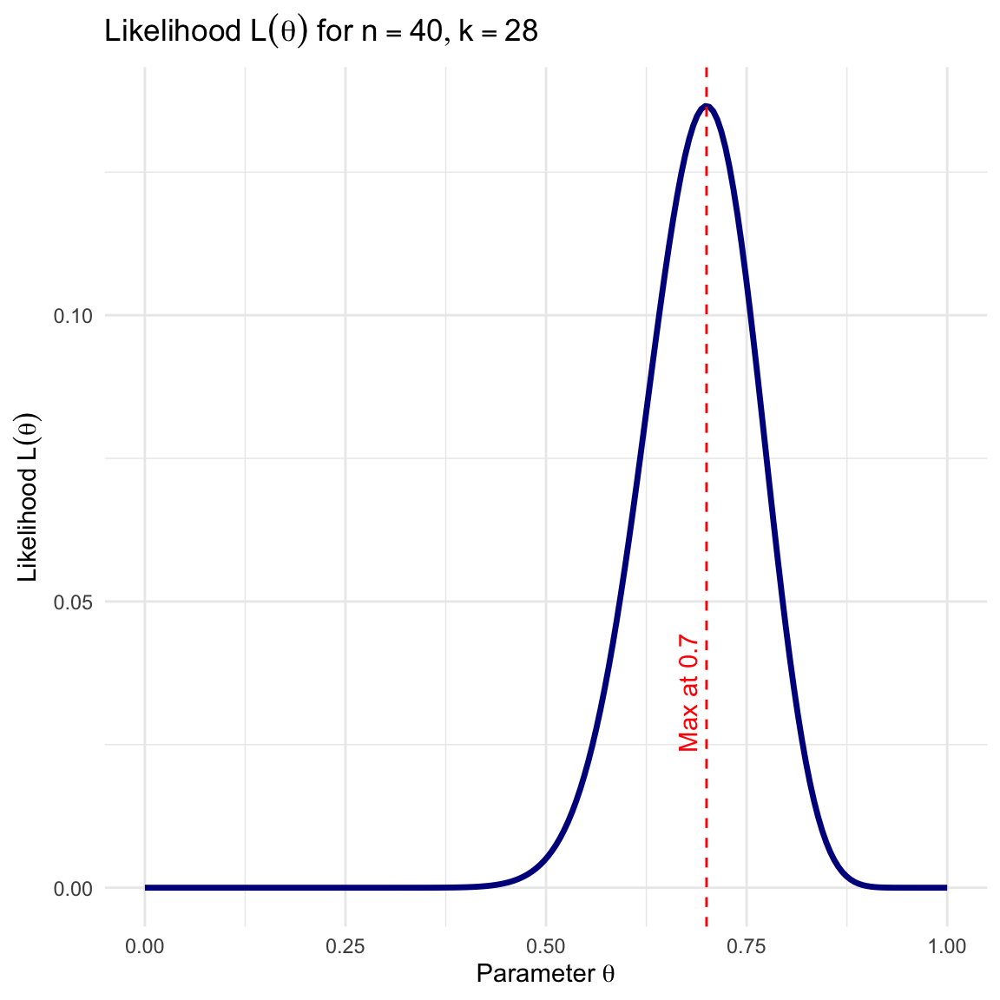
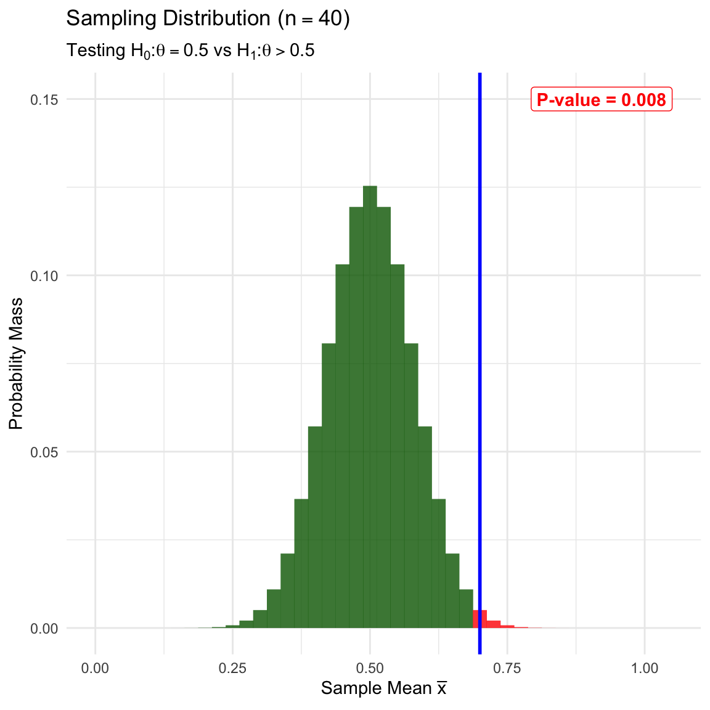

1 Introduction to Statistical Inference
1.1 Population Model (Data Model)
We begin with observations (units) \(X_1, X_2, \dots, X_n\). These may be vectors. We regard these observations as a realization of random variables.
Definition 1.1 (Population Distribution) We assume that \(X_1, X_2, \dots, X_n \sim f(x)\). The function \(f(x)\) is called the population distribution.
Assumptions and Scope
For simplicity, we often assume the data are Independent and Identically Distributed (i.i.d.). The assumption of identical distribution can be relaxed to regression settings in which the distributions of \(x_i\)’s are independent but dependent on covariate \(x_i\).
In Parametric Statistics, we assume \(f(x)\) is of a known analytic form but involves unknown parameters.
Example 1.1 (Parametric Model: Normal) Consider the Normal distribution: \[f(x; \theta) = \frac{1}{\sqrt{2\pi\sigma^2}} e^{-\frac{(x-\mu)^2}{2\sigma^2}}\] Here, the parameter space is \(\Theta = \{ (\mu, \sigma^2) : \mu \in \mathbb{R}, \sigma \in [0, +\infty) \}\). The goal is to learn aspects of the unknown \(\theta\) from observations \(X_1, \dots, X_n\).
Example 1.2 (Parametric Model: Bernoulli) Consider a sequence of binary outcomes (e.g., Success/Failure) where each \(X_i \in \{0, 1\}\). We assume \(X_i \sim \text{Bernoulli}(\theta)\). The probability mass function is: \[f(x; \theta) = \theta^x (1-\theta)^{1-x}\] Here, the parameter space is \(\Theta = [0, 1]\), where \(\theta\) represents the probability of success.
1.2 Probabilistic Model vs. Statistical Inference
There is a fundamental distinction between probability and statistics regarding the parameter \(\theta\). We can visualize this using a “shooting target” analogy:
\(\theta\) (The Center): The true, unknown bullseye location.
\(x\) (The Shots): The observed holes on the target board.
Probability (Deductive): The center \(\theta\) is known. We predict where the shots \(x\) will land.
Statistics (Inductive): The shots \(x\) are observed on the board. The center \(\theta\) is unknown. We hypothesize different potential centers to see which one best explains the shots.
1.3 A Motivating Example: The Lady Tasting Tea
To illustrate the concepts of statistical inference, we consider the famous experiment described by R.A. Fisher.
A lady claims she can distinguish whether milk was poured into the cup before or after the tea. To test this claim, we prepare \(n\) cups of tea.
- Random Variable: Let \(X_i=1\) if she identifies the cup correctly, and \(0\) otherwise.
- Parameter: Let \(\theta\) be the probability that she correctly identifies a cup.
- The Data: Suppose we observe that she identifies 70% of cups correctly (\(\bar{x} = 0.7\)), which is a summary of the observed vector of \(x_i\), for example,
\[x=(0,1,1,0, 1,1,0,1,1,1)\]
We observe 7 out of 10 correct (\(k=7\)). \[\bar{x} = 0.7\]
We observe 28 out of 40 correct (\(k=28\)). \[\bar{x} = 0.7\]
1.4 Questions to Answer in Statistical Inference
Using this example, we identify the four main types of statistical inference.
Point Estimation
We want to use a single number to capture the parameter: \(\hat{\theta} = \theta(X_1, \dots, X_n)\).
- Tea Example: Our best guess for her success rate is \(\hat{\theta} = 0.7\).
Hypothesis Testing
We want to test a theory about the parameter: \(H_0\) vs \(H_1\).
- Tea Example: Is she just guessing? We test \(H_0: \theta = 0.5\) vs \(H_1: \theta > 0.5\).
Model Assessment
We want to test a theory about the parameter: \(H_0\) vs \(H_1\).
- Example: Can we use a reduced model? What level of complexity of \(f(x; \theta)\) is necessary?
Interval Estimation
We want to construct an interval likely to contain the parameter: \(\theta \in (L, U)\).
- Tea Example: We might say her true skill \(\theta\) is likely between \(0.45\) and \(0.95\).
Prediction
We want to predict a new observation \(Y_{n+1}\) given previous data.
- Tea Example: If we give her an \((n+1)\)-th cup, what is the probability she identifies it correctly?
1.5 The Likelihood Function
The bridge between probability and statistics is the Likelihood Function.
Definition 1.2 (Likelihood Function) Let \(f(x_1, \dots, x_n; \theta)\) be the joint probability density (or mass) function of the data given the parameter \(\theta\). When we view this function as a function of \(\theta\) for fixed observed data \(x_1, \dots, x_n\), we call it the likelihood function, denoted \(L(\theta)\). \[L(\theta) = f(x_1, \dots, x_n; \theta)\]
Example: Lady Tasting Tea
For our Tea Tasting data, the likelihood is proportional to the Binomial probability: \[L(\theta) = \binom{n}{k} \theta^k (1-\theta)^{n-k}\]
Here, \(L(\theta) = \binom{10}{7} \theta^{7} (1-\theta)^{3}\).
| \(\theta\) | Calculation \(\binom{10}{7} \theta^{7} (1-\theta)^{3}\) | \(L(\theta)\) |
|---|---|---|
| 0.0 | 120 \(\times 0^{7} \times 1^{3}\) | 0.0000 |
| 0.2 | 120 \(\times 0.2^{7} \times 0.8^{3}\) | 0.0008 |
| 0.4 | 120 \(\times 0.4^{7} \times 0.6^{3}\) | 0.0425 |
| 0.6 | 120 \(\times 0.6^{7} \times 0.4^{3}\) | 0.2150 |
| 0.7 | 120 \(\times 0.7^{7} \times 0.3^{3}\) | 0.2668 (Max) |
| 0.8 | 120 \(\times 0.8^{7} \times 0.2^{3}\) | 0.2013 |
| 1.0 | 120 \(\times 1^{7} \times 0^{3}\) | 0.0000 |
Code
likelihood_fun <- function(theta) { choose(n_small, k_small) * theta^k_small * (1 - theta)^(n_small-k_small) }
theta_vals <- seq(0, 1, length.out = 200)
df <- data.frame(theta = theta_vals, Likelihood = likelihood_fun(theta_vals))
ggplot(df, aes(x = theta, y = Likelihood)) +
geom_line(color = "darkblue", size = 1.2) +
geom_vline(xintercept = k_small/n_small, linetype = "dashed", color = "red") +
annotate("text", x = k_small/n_small, y = max(df$Likelihood)/4, label = paste("Max at", k_small/n_small), color = "red", angle = 90, vjust = -0.5) +
labs(title = TeX(paste0("Likelihood $L(\\theta)$ for $n=", n_small, ", k=", k_small, "$")),
x = TeX(r'(Parameter $\theta$)'),
y = TeX(r'(Likelihood $L(\theta)$)')) +
theme_minimal()
Here, \(L(\theta) = \binom{40}{28} \theta^{28} (1-\theta)^{12}\). Notice how the likelihood becomes narrower (more peaked) with more data, even though the peak remains at 0.7.
| \(\theta\) | Calculation \(\binom{40}{28} \theta^{28} (1-\theta)^{12}\) | \(L(\theta)\) |
|---|---|---|
| 0.0 | 5.5868535^{9} \(\times 0^{28} \times 1^{12}\) | 0.0000 |
| 0.2 | 5.5868535^{9} \(\times 0.2^{28} \times 0.8^{12}\) | 0.0000 |
| 0.4 | 5.5868535^{9} \(\times 0.4^{28} \times 0.6^{12}\) | 0.0001 |
| 0.6 | 5.5868535^{9} \(\times 0.6^{28} \times 0.4^{12}\) | 0.0576 |
| 0.7 | 5.5868535^{9} \(\times 0.7^{28} \times 0.3^{12}\) | 0.1366 (Max) |
| 0.8 | 5.5868535^{9} \(\times 0.8^{28} \times 0.2^{12}\) | 0.0443 |
| 1.0 | 5.5868535^{9} \(\times 1^{28} \times 0^{12}\) | 0.0000 |
Code
likelihood_fun <- function(theta) { choose(n_large, k_large) * theta^k_large * (1 - theta)^(n_large-k_large) }
theta_vals <- seq(0, 1, length.out = 200)
df <- data.frame(theta = theta_vals, Likelihood = likelihood_fun(theta_vals))
ggplot(df, aes(x = theta, y = Likelihood)) +
geom_line(color = "darkblue", size = 1.2) +
geom_vline(xintercept = k_large/n_large, linetype = "dashed", color = "red") +
annotate("text", x = k_large/n_large, y = max(df$Likelihood)/4, label = paste("Max at", k_large/n_large), color = "red", angle = 90, vjust = -0.5) +
labs(title = TeX(paste0("Likelihood $L(\\theta)$ for $n=", n_large, ", k=", k_large, "$")),
x = TeX(r'(Parameter $\theta$)'),
y = TeX(r'(Likelihood $L(\theta)$)')) +
theme_minimal()

Questions
- Is an estimator like \(\bar x\), which is called Maximum Likelihood Estimator (MLE), a good estimator in general?
- What do you discover from actually observing the two likelihood unctions of different sample size \(n\)?
- Is the likelihood function central to all inference problems?
- What are the essential ‘parameters’ of the likelihood function?
There are two primary frameworks for “How” to perform these inferences.
1.6 Frequentist Inference
- Concept: \(\theta\) is unknown but fixed; Data \(X\) is random.
- Sampling Distribution: We analyze how \(\hat{\theta}\) behaves under hypothetical repeated sampling.
Example: Frequentist Test of Lady Tasting Tea
We test \(H_0: \theta=0.5\) (Guessing) vs \(H_1: \theta > 0.5\) (Skill). We analyze the behavior of \(\bar{X}\) assuming \(H_0\) is true. The rejection region (one-sided) is shaded red.
We calculate the P-value: Probability of observing \(\ge 7\) correct out of 10, assuming \(\theta=0.5\).
Code
true_theta <- 0.5;
k_vals <- 0:n_small
probs <- dbinom(k_vals, size=n_small, prob=true_theta)
df_exact <- data.frame(x_bar = k_vals/n_small, prob = probs)
# One-sided rejection region
df_exact$color_group <- ifelse(df_exact$x_bar >= k_small/n_small, "Extreme", "Normal")
p_val <- sum(df_exact$prob[df_exact$color_group == "Extreme"])
# Plot
ggplot() +
geom_segment(data=df_exact, aes(x=x_bar, xend=x_bar, y=0, yend=prob, color=color_group),
size=5, alpha=0.8) +
scale_color_manual(values=c("Extreme"="red", "Normal"="darkgreen"), guide="none") +
geom_vline(xintercept = k_small/n_small, color = "blue", size = 1) +
annotate("label", x = 1.05, y = 0.25,
label = paste0("P-value = ", round(p_val, 3)),
hjust = 1, color="red", fontface="bold") +
labs(title = TeX(paste0("Sampling Distribution ($n=", n_small, "$)")),
subtitle = TeX(r'(Testing $H_0: \theta=0.5$ vs $H_1: \theta > 0.5$)'),
x = TeX(r'(Sample Mean $\bar{x}$)'), y = "Probability Mass") +
theme_minimal()
We calculate the P-value: Probability of observing \(\ge 28\) correct out of 40. With a larger sample size, the same proportion (0.7) provides stronger evidence against the null.
Code
true_theta <- 0.5;
k_vals <- 0:n_large
probs <- dbinom(k_vals, size=n_large, prob=true_theta)
df_exact <- data.frame(x_bar = k_vals/n_large, prob = probs)
# One-sided rejection region
df_exact$color_group <- ifelse(df_exact$x_bar >= k_large/n_large, "Extreme", "Normal")
p_val <- sum(df_exact$prob[df_exact$color_group == "Extreme"])
ggplot() +
geom_segment(data=df_exact, aes(x=x_bar, xend=x_bar, y=0, yend=prob, color=color_group),
size=4, alpha=0.8) +
scale_color_manual(values=c("Extreme"="red", "Normal"="darkgreen"), guide="none") +
geom_vline(xintercept = k_large/n_large, color = "blue", size = 1) +
annotate("label", x = 1.05, y = 0.15,
label = paste0("P-value = ", round(p_val, 3)),
hjust = 1, color="red", fontface="bold") +
labs(title = TeX(paste0("Sampling Distribution ($n=", n_large, "$)")),
subtitle = TeX(r'(Testing $H_0: \theta=0.5$ vs $H_1: \theta > 0.5$)'),
x = TeX(r'(Sample Mean $\bar{x}$)'), y = "Probability Mass") +
theme_minimal()

1.6.1 Questions to Answer
In this course, we will answer several challenging questions related to general parametric models in the Frequentist framework.
- MLE: Can we use the Maximum Likelihood Estimator (MLE) \(\hat{\theta}\) for general models even no closed-form solution exists? Is MLE a good method?
- Sampling Distributions: What is the distribution of \(\hat{\theta}_{\text{MLE}}\)? What’s its mean and standard deviation?
- Confidence Intervals: How to construct CI with \(\hat{\theta}\)?
- Hypothesis Testing: How do we derive powerful tests from the likelihood function? How to assess goodness-of-fit of parametric models with their likelhiood information?
1.7 Bayesian Inference
- Concept: \(\theta\) is regarded as a random variable.
- Posterior: Posterior \(\propto\) Likelihood \(\times\) Prior.
Example: Bayesian Analysis of the Lady Tasting Tea
Prior: \(\text{Beta}(1,1)\) (Uniform).
Posterior: \(\text{Beta}(1+7, 1+3) = \text{Beta}(8, 4)\)
Code
theta_grid <- seq(0, 1, length.out = 200)
posterior <- dbeta(theta_grid, 1+k_small, 1+(n_small-k_small))
prior <- dbeta(theta_grid, 1, 1)
prob_skill <- pbeta(0.5, 1+k_small, 1+(n_small-k_small), lower.tail = FALSE)
df_bayes <- data.frame(
Theta = rep(theta_grid, 2),
Density = c(prior, posterior),
Type = rep(c("Prior", "Posterior"), each = 200)
)
ggplot(df_bayes, aes(x = Theta, y = Density, color = Type, linetype = Type)) +
geom_line(size = 1.2) +
scale_color_manual(values = c("blue", "gray")) +
scale_linetype_manual(values = c("solid", "dashed")) +
annotate("label", x = 0.1, y = 2,
label = TeX(paste0("$P(\\theta > 0.5 | x) = ", round(prob_skill, 3), "$")),
hjust = 0, color="blue", fontface="bold") +
labs(title = TeX(paste0("Bayesian Update ($n=", n_small, "$)")),
x = TeX(r'($\theta$)'), y = "Density") +
theme_minimal() + theme(legend.position = "top")
Posterior: \(\text{Beta}(1+28, 1+12) = \text{Beta}(29, 13)\).
Code
theta_grid <- seq(0, 1, length.out = 200)
posterior <- dbeta(theta_grid, 1+k_large, 1+(n_large-k_large))
prior <- dbeta(theta_grid, 1, 1)
prob_skill <- pbeta(0.5, 1+k_large, 1+(n_large-k_large), lower.tail = FALSE)
df_bayes <- data.frame(
Theta = rep(theta_grid, 2),
Density = c(prior, posterior),
Type = rep(c("Prior", "Posterior"), each = 200)
)
ggplot(df_bayes, aes(x = Theta, y = Density, color = Type, linetype = Type)) +
geom_line(size = 1.2) +
scale_color_manual(values = c("blue", "gray")) +
scale_linetype_manual(values = c("solid", "dashed")) +
annotate("label", x = 0.1, y = 2.5,
label = TeX(paste0("$P(\\theta > 0.5 | x) = ", round(prob_skill, 3), "$")),
hjust = 0, color="blue", fontface="bold") +
labs(title = TeX(paste0("Bayesian Update ($n=", n_large, "$)")),
x = TeX(r'($\theta$)'), y = "Density") +
theme_minimal() + theme(legend.position = "top")
1.7.1 Questions to Answer
We will also tackle the specific technical challenges involved in Bayesian analysis.
- Posterior Derivation: How do we derive the posterior distribution \(f(\theta|x)\) for various likelihoods and priors?
- Comparing with Other methods: Are Bayesain methods good or not or general inference?
- Computation: When the posterior cannot be derived analytically, how do we use computational techniques like Markov Chain Monte Carlo (MCMC) to sample from it?
- Summarization: How do we construct Credible Intervals (e.g., Highest Posterior Density regions) from posterior samples?
- Prediction: How do we solve the integral required to compute the posterior predictive distribution for future data?
- Prior: How to choose our prior? What’s its effect on our inference?
- Model Comparison and Assessment: How to assess a Bayesian model?